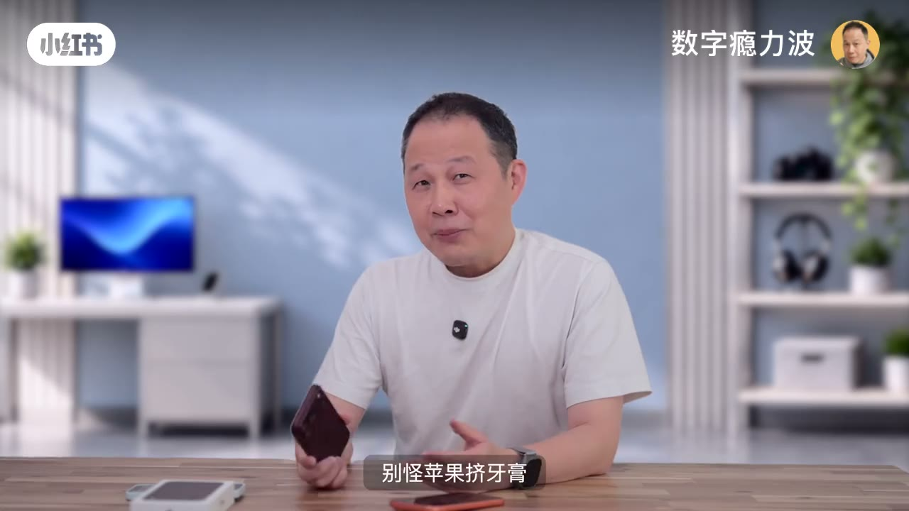
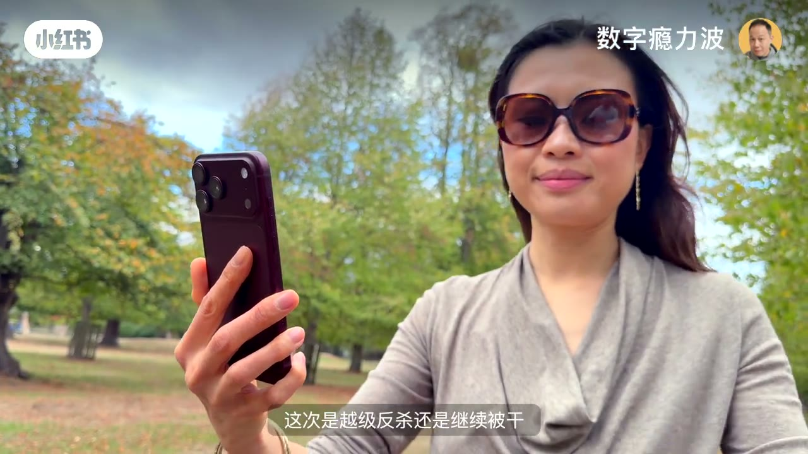
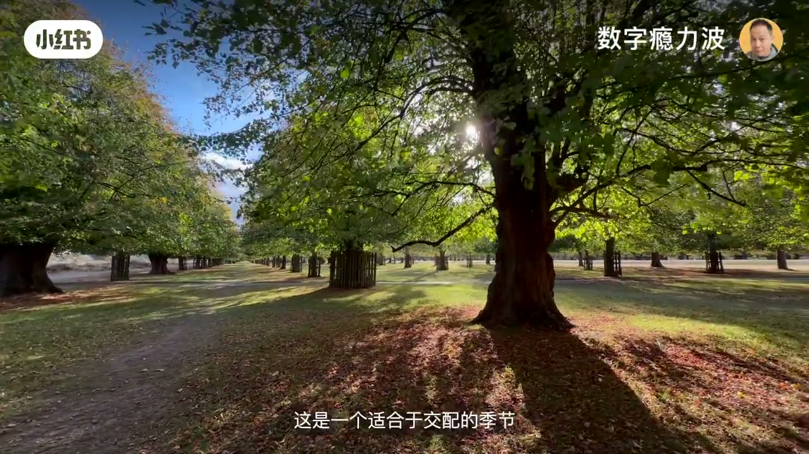
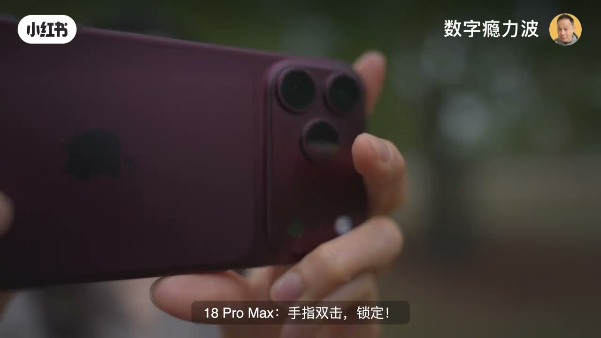
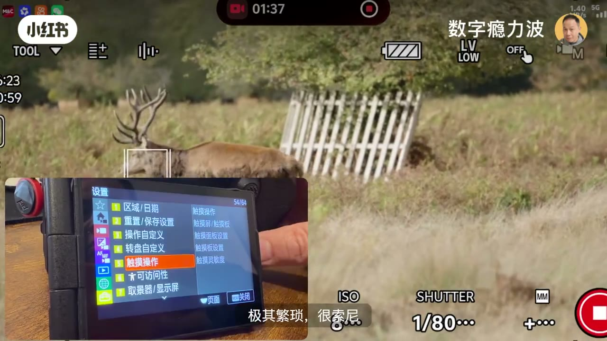

内容要点
iPhone 18 Pro Max 主摄光圈物理账仍输全画幅，但智能追踪对焦在草原长焦实战中，双击锁定效率干翻需菜单多步设置的索尼 A1 II；17 无追踪先出局。
知识结构
f/1.48≈全画幅 f/5.1；追焦反转钩子。
17 无追踪出局；18 双击咬鹿。
A1 II 专业但翻锁；苹果无脑一步。
选 Vlog 神机看追焦操作路径，不只看光圈标称。
00:00–00:40光圈物理账 + 反转钩子
别怪挤牙膏：底比全画幅小约12倍，f/1.48 换算全画幅大约 f/5.1，进光量天生差三档多——物理极限在这。但作者没想到：被 CMOS 锁定的手机，居然在视频追焦上干翻四万多的索尼 A1 Mark II；再差一步就能当「Vlog 神机」。三机同框，不念参数只看结果。


00:40–01:25智能追踪实战
视频追焦是影像系统最严的试金石，也是 17 Pro Max 在微单面前抬不起头的痛点。18 上了智能追踪对焦。草原实战：长焦 4K60 拍发情期鹿群（需远离≥50米）。17 第一个出局——只有长按锁对焦、没有追踪；18 手指双击锁定，对焦框死死咬着鹿跟着走。


01:25–01:50专业菜单 vs 无脑双击
A1 II 想跟住：进菜单→找对焦→开识别→选动物→调灵敏度——「极其专业、极其翻锁」。等走完七步，18 已经双击搞定：「非常不专业、极其苹果」。要拉开差距还得上极限难度：草丛若隐若现、路群中被遮挡（源文件后半损坏，口述截断于此）。

完整转录（70段）
Whisper medium · 中文 · 已做术语校正，仍可能有识别误差。
看完iPhone发布会
我以为的iPhone 18 Pro Max的大光圈
18 Pro Max到手后的大光圈
别怪苹果挤牙膏
底比全画幅小12倍
18的F1.48换送过来
只相当于全画幅的F5.1
近光量天生差的三档多
物理极限摆在这儿
但我万万没想到
这台被CMOS物理锁定的手机
居然在视频追焦上
证明干翻了这台
4万多块的索尼微单旗舰A1 Mark II
而且就差最后一步
它就是当之无愧的Vlog神机
从17到18
苹果把影像大招藏在了哪儿
对上微单旗舰
这次是越级反杀还是继续被干
大家好
这里是数字瘾力波
今天三机同框
不念参数
只看结果
帮你找回自己的答案
视频追焦
影像系统最严厉的父亲
也是17 Pro Max在微单面前
抬不起头的痛点
今年18 Pro Max上了个新技能
智能追踪对焦
是强还是弱
马上
茫茫草原的第一场以后
万物充满了生机
这是一个适合与交配的季节
公园鹿群正在发情期
要求远离至少50米
正好拿着长焦4K60帧的视频来打个野
17 Pro Max第一个出局
只有长按锁对焦
没有追踪
18 Pro Max手指双击
锁定
对焦框死死的咬着这只鹿
跟着它走
那4万块的A1 Mark II呢
想跟住
首次使用
得先进菜单
找对焦
开识别
选动物
调灵敏度
极其专业
极其繁琐
狠索尼
等我在菜单里走完这七步公路
连孩子都生完了
再看18 Pro Max
非常不专业
一步双击
搞定
极其无脑
极其苹果
要拉开差距
得上极限难度
无论是在草丛里若隐若现
还是在鹿群中被击倒